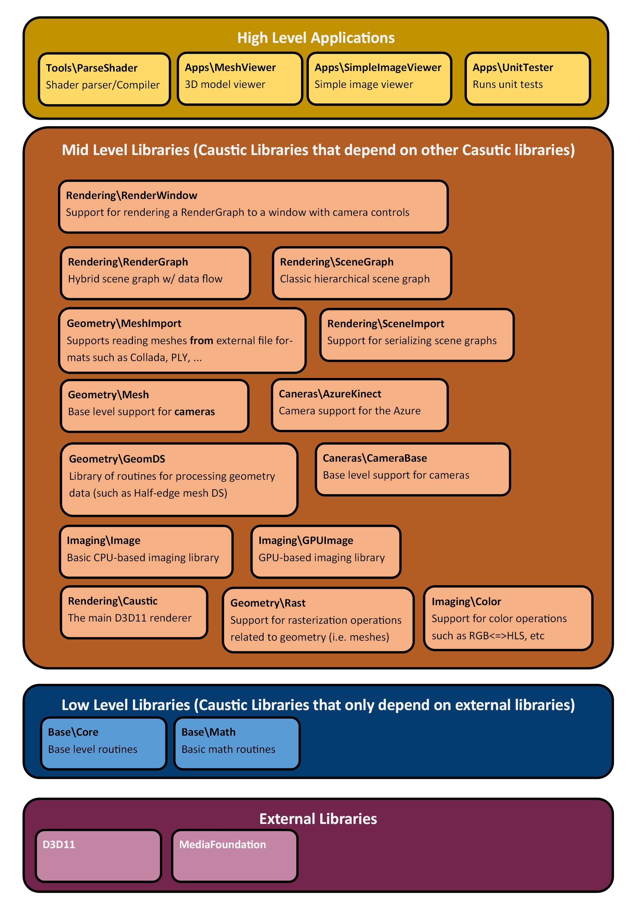

Welcome to Caustic
Caustic is a framework for building graphics applications.
It is based primarily on D3D11 and Windows 10.
Caustic is distributed under the MIT License
Below is an layer graph of the various libraries which currently make up the framework.
